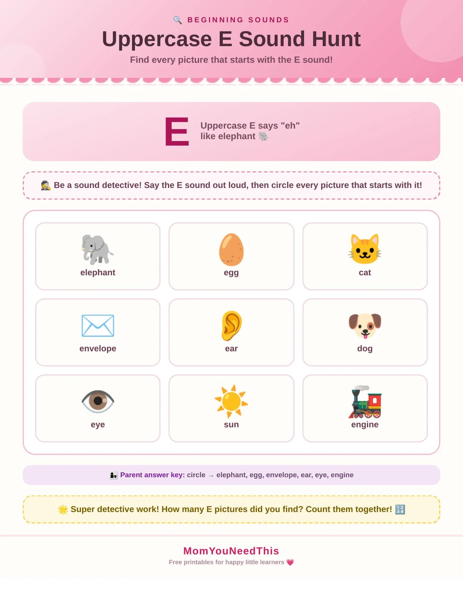

Uppercase E Sound Practice Recognize The Uppercase E And Its Sound
Start letter learning with this uppercase E printable. Your child will spot the capital letter and practise hearing its short beginning sound — the /e/ in Elephant, Egg and Elbow.
🐘 Elephant
🥚 Egg
👁️ Eye
Quick Answer
Capital E is the letter that starts names, sentences and book titles — and this page turns it into a hunt. Preschoolers search a page of mixed letters for every uppercase E, circling each find while they practise its short beginning sound, the /e/ in Elephant, Egg and Elbow. It builds phonemic awareness and letter recognition, is designed for ages 3-5, and prints free at home with no signup needed.

🔠 Find The Uppercase E
Say the letter name and sound together: “E says /e/.” Then find every uppercase E on the page and stamp or circle it. E hides next to F, its closest look-alike — count the bars: E has three, F has only two.
⬇️ Download Free Printable 🖨️ Print🎁 Free printable for toddlers & preschoolers
🎵 Make The Sound Together
Make the short e sound together: mouth barely open, a short relaxed “eh” — Elephant, Egg, Elbow. Then try E's other sound, its long name-sound, in Eagle and Eye. Same letter, two sounds — childr
🧲 Letters Are Everywhere
Capital E is the letter that starts names and sentences, so it is worth spotting out in the world: the E at the start of Emma and Ethan, the E on book covers and EXIT signs. Every sighting is a small win to celebrate.
oys throughout the day. Real-world spotting makes learning stick.🎨 Keep Exploring Free Letter Activities
More alphabet learning activities are added regularly for toddlers and preschoolers.
🎁 View All Free Resources🔊 The E Sound
The short E sound is a relaxed little sound made with the mouth barely open: /e/ — eh. It starts Elephant, Egg and Elbow, and it is the sound at the start of every, engine and envelope too.
E has a second sound — its long sound, which is simply its name. You can hear it in Eye (one of the words on this page), Eagle, Emu and Eel. This page practises the short sound, the one children meet first and most often.
Capital E begins Elephant and Egg on this page. Watch for it at the front of names like Emma and Ethan, where capitals do the starting job. Its shape is worth a close look too: three bars make an E; two bars would make it an F.
🖨️ How to Use This Printable
Get started in minutes — everything here is free and made for busy parents.
- Download the printable. Tap the download button to save the free Free Uppercase E Sound Practice file to your device.
- Print it out. Use any home printer and regular paper — cardstock works great for pages little hands will use again and again. The print button opens the full-size page in a new tab if you prefer to print from there.
- Learn together. Sit with your child and say the short sound — /e/, like Egg — each time an E is found. Count the three bars together to check it is really an E and not an F. Short sessions work best.
- Explore more. Check the free printables linked below for your next activity.
❓ Free Uppercase E Sound Practice FAQs
Is this Free Uppercase E Sound Practice printable free?
Yes — every printable on MomYouNeedThis is 100% free to download and print. No signup, no payment, just tap the download button and print fresh copies of the E page whenever your child wants another hunt.
How do I use this uppercase E sound printable?
Tap download, print the page, and settle in together. First say the letter's name and make its short sound — /e/, like Elephant. Then hunt: circle every capital E hiding among the other letters, counting the three bars to be sure. Short, playful sessions work better than long lessons for little learners.
What literacy skills does this practice?
Letter recognition, beginning sounds, and print awareness. Capital E also opens the door to an early phonics secret: e has two sounds — the short /e/ on this page, and a long sound that says its name, heard in Eagle and Eye. These are the core pre-reading skills that prepare children for phonics and reading.
🔗 More Free Printables You’ll Love
Pair this printable with more free learning activities from the MomYouNeedThis library.
- 🔊 Free Lowercase Letter E Sound PracticeFree printable lowercase letter e sound practice for little learners.
- 🔊 Free Uppercase Letter F Sound PracticeFree printable uppercase letter f sound practice for little learners.
- 🔊 Free Uppercase Letter B Sound PracticeFree printable uppercase letter b sound practice for little learners.
- 🔎 Free Find Letter E SoundFree printable find letter e sound practice for little learners.